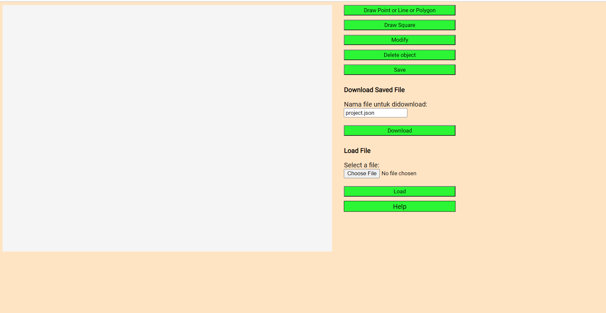
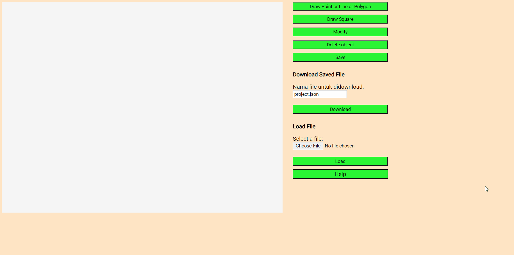
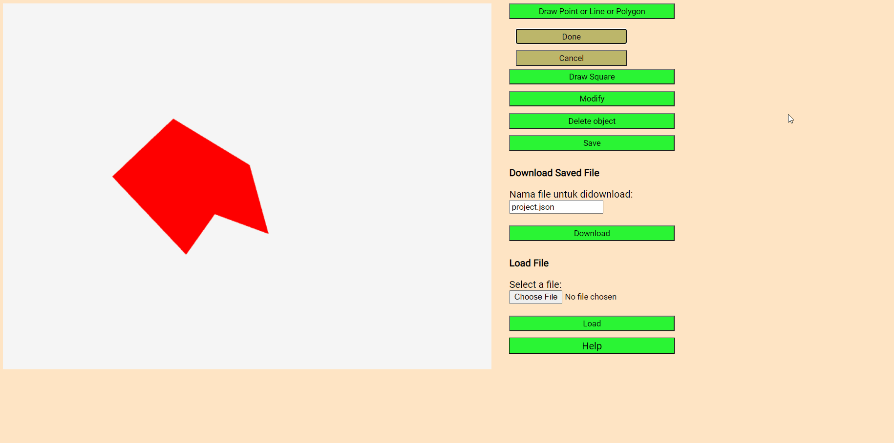
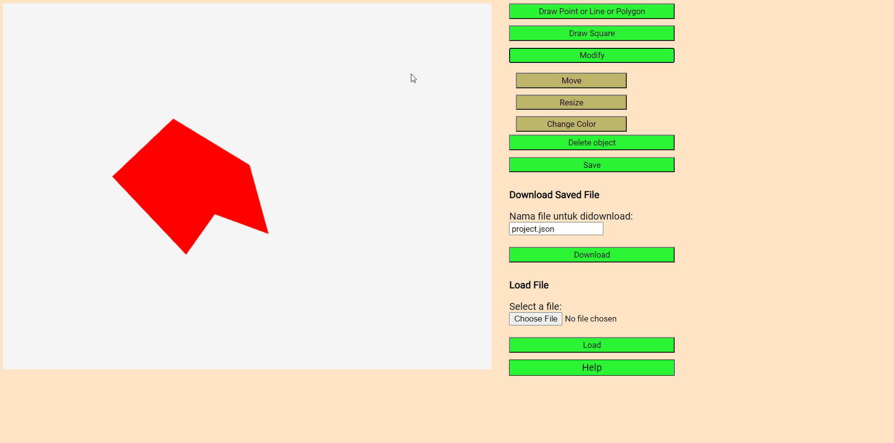
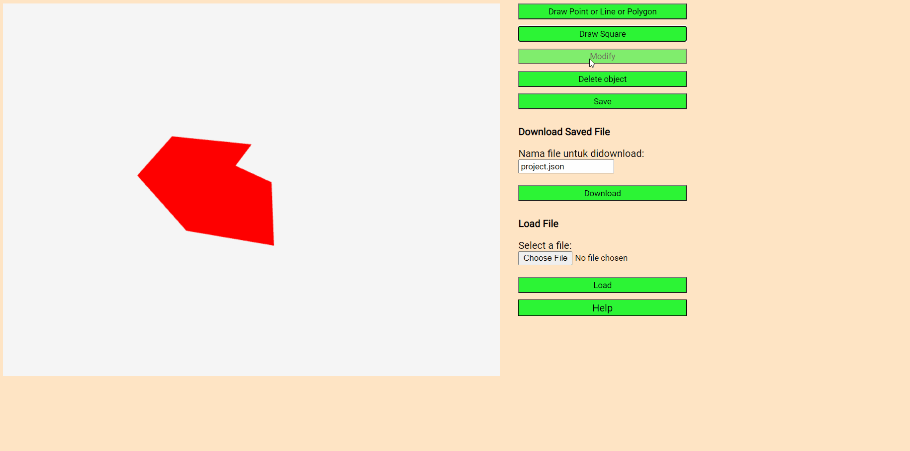
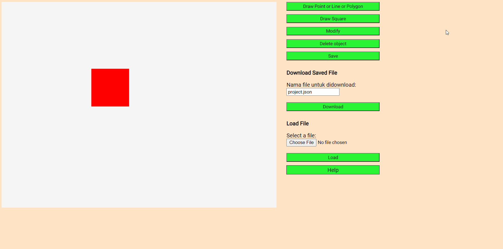
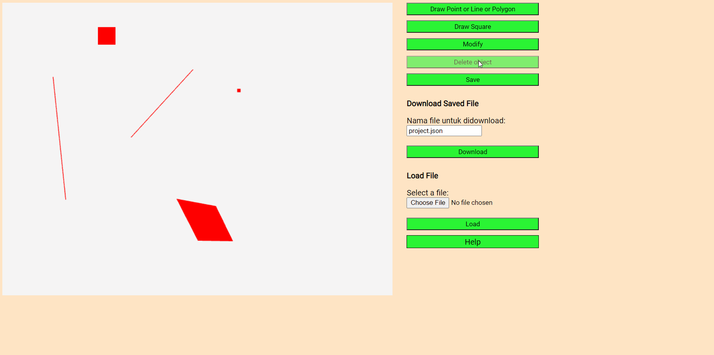
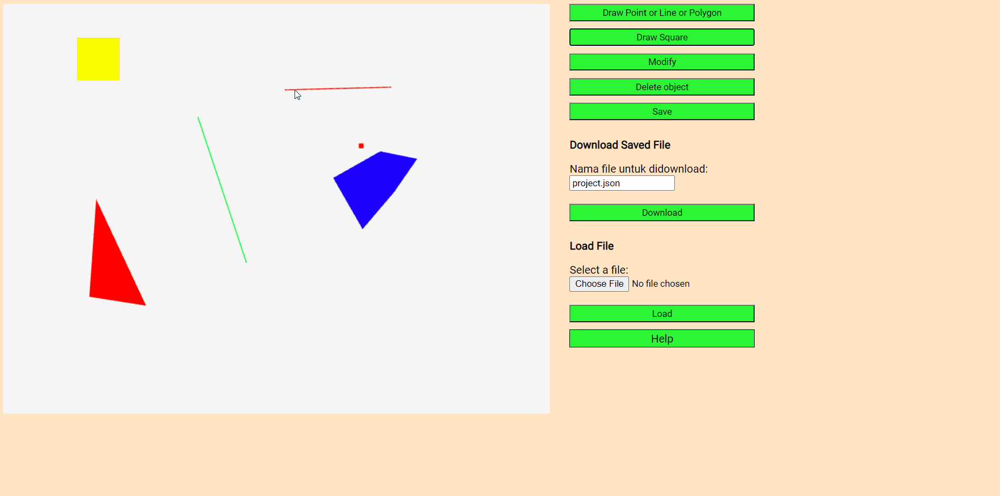
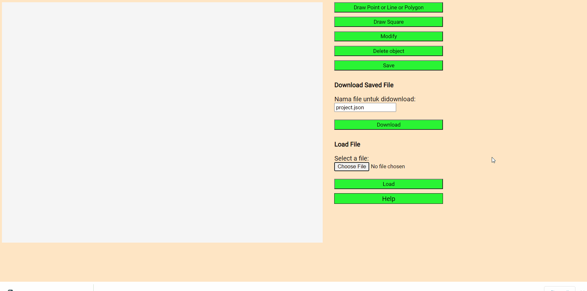

1

Ini merupakan tampilan awal CAD
2

Klik tombol draw point or line or polygon lalu klik pada canvas untuk membuat point, kemudian klik tombol done
3
Klik tombol draw point or line or polygon lalu klik pada canvas pada dua tempat berbeda untuk membuat 2 titik. Kemudian klik tombol done dan line akan terbentuk
4
Klik tombol draw point or line or polygon lalu klik pada canvas pada tiga atau lebih tempat berbeda untuk membuat banyak titik. Kemudian klik tombol done dan polygon akan terbentuk
5
Klik tombol draw square lalu pada canvas klik pada suatu area dan geser mouse anda. Ketika mouse dilepas gambar square telah dibentuk
6

Buat sebuah objek baru, lalu klik tombol modify maka akan muncul pilihan move, resize, dan change color
7

Untuk memindahkan objek, klik tombol move lalu klik dan geser objek pada canvas yang diinginkan
8

Untuk mengubah ukuran objek, klik tombol resize dan klik objek lalu tarik dengan menggunakan mouse, maka objek akan mengalami perubahan ukuran
9

Untuk mengubah warna objek, klik tombol change color dan pilih warna yang diinginkan, lalu klik objek yang ingin diubah warnanya
10

Pada canvas yang terdiri dari beberapa objek, klik tombol delete object dan klik objek yang ingin dihapus pada canvas
11

Untuk menyimpan objek yang telah digambar, klik save lalu download. Nama file yang didownload dapat diubah
12

Untuk memuat kembali objek dari file, klik choose file lalu pilih file dan open, kemudian klik tombol load dan objek pada file akan dimuat
❮
❯